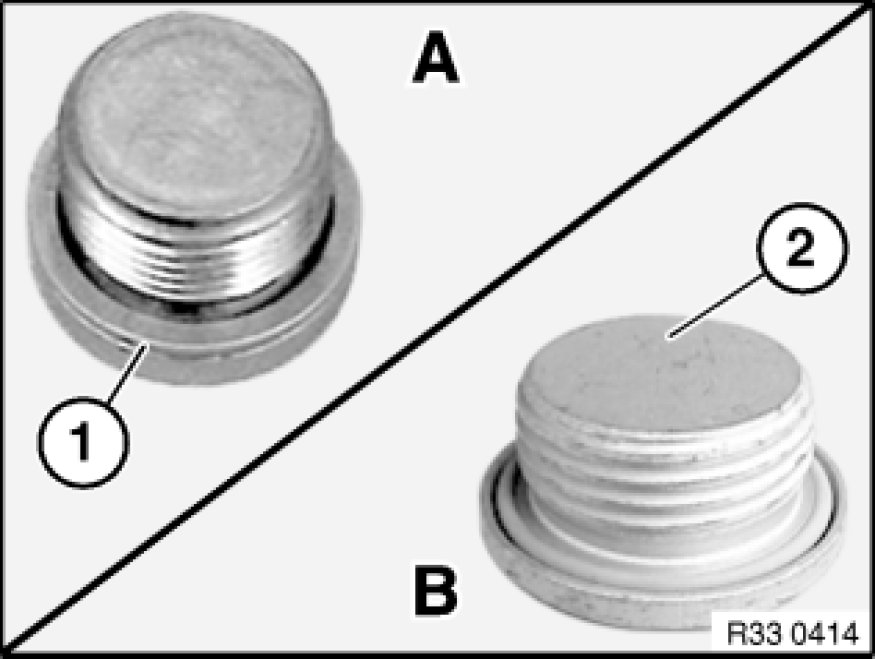
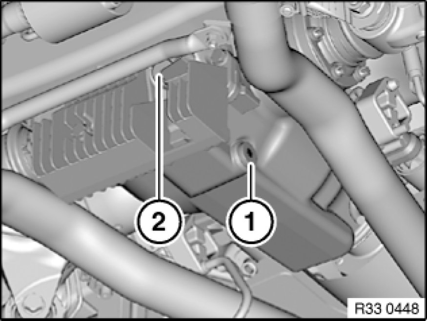
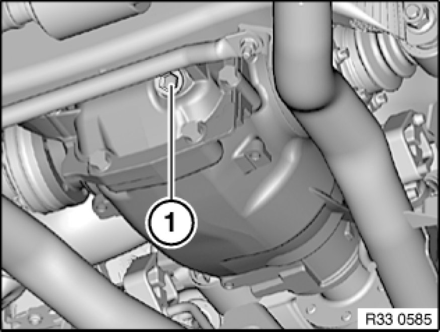

Oil Change in Rear Differential incl. Used Oil Disposal
00 11 259 - Oil change in rear differential incl. used oil disposal

Note:
Observe following instructions and torques for variants (A & B).
-A)
- Replace sealing ring (1) after releasing.
Tightening torque 33 11 3AZ 33 11 Rear Differential Case with Cover (with sealing ring).
-B)
- Replace screw plug (2) with O-ring after releasing.
Tightening torque 33 11 9AZ 33 11 Rear Differential Case with Cover (with O-ring).

Warning!
Risk of burning if exhaust system is touched!
Danger of poisoning 00 .. ... Danger of Poisoning If Oil Is Ingested/Absorbed Through the Skin if oil is ingested/absorbed through the skin!
Risk of injury 00 .. ... Risk of Injury If Oil Comes Into Contact With Eyes and Skin if oil comes into contact with eyes and skin!

Important!
Risk of damage!
To avoid serious damage to the rear axle differential, it is essential to use only approved transmission oils in the rear axle differential.
Note:
The oil does not need to be changed in rear differentials carrying the "Life-Time-Oil" sticker.
Only change oil when rear differential is at normal operating temperature.

Recycling:
Catch and dispose of emerging differential oil.
Observe country-specific waste-disposal regulations

Oil drain plug present:
Place oil collecting apparatus underneath.
Open plug (1).
Drain and dispose of differential oil.
Replace sealing ring or screw plug.
Tightening torque 33 11 3AZ 33 11 Rear Differential Case with Cover (with sealing ring).
Tightening torque 33 11 9AZ 33 11 Rear Differential Case with Cover (with O-ring).
Open plug (2).
Add rear differential oil up to lower edge of opening for screw plug (2); if necessary, refer to Technical Data for necessary fill quantity.
Replace sealing ring or screw plug.
Tightening torque 33 11 3AZ 33 11 Rear Differential Case with Cover (with sealing ring).
Tightening torque 33 11 9AZ 33 11 Rear Differential Case with Cover (with O-ring).

No oil drain plug:
Open plug (1).
Drain and dispose of differential oil.
Add rear differential oil up to lower edge of opening for screw plug (1); if necessary, refer to Technical Data for necessary fill quantity.
Replace sealing ring or screw plug.
Tightening torque 33 11 3AZ 33 11 Rear Differential Case with Cover (with sealing ring).
Tightening torque 33 11 9AZ 33 11 Rear Differential Case with Cover (with O-ring).